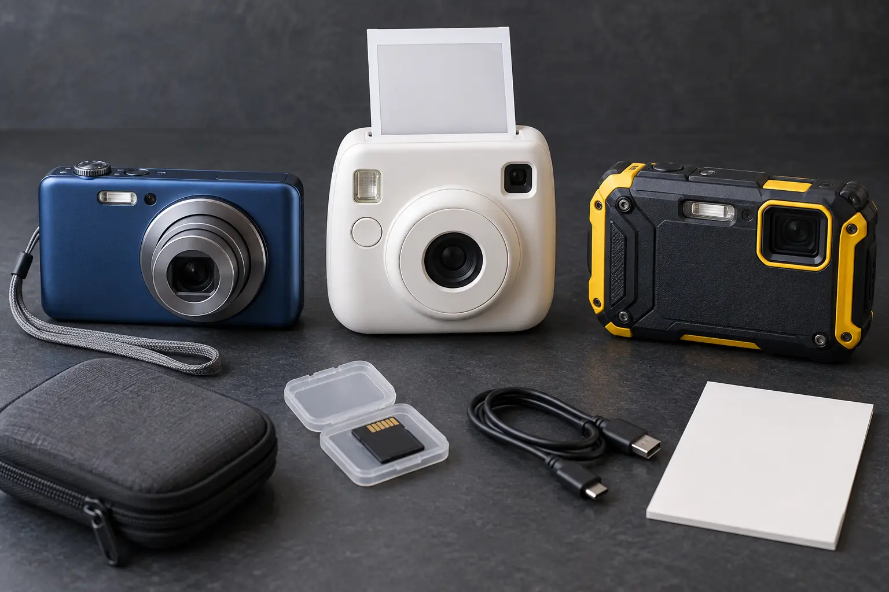

Simple digital
Best fit: lots of photos, adult review and reusable storage. Tradeoff: transfer, backup and culling become household work.
USEFUL TECHNOLOGY · SCHOOL-AGE KIDS · BUY LESS WRONG
The real choice is not megapixels. It is what happens after the shutter: save to a card, print immediately, survive water and drops, or sync through an account you may not want a child to manage.

A camera can support observation, storytelling, travel memory and creative control without handing a child a connected phone. It can also become another charger, account, subscription, privacy problem or drawer object. Write the job in one sentence: “Take fifty trail photos and choose five with an adult,” “Make four prints for a trip journal,” or “Use a camera at the beach without risking the family phone.”
Do not buy a category because it is labeled “for kids.” School-age children vary in hand size, patience, reading ability and care. A real return policy, understandable manual and adult-managed workflow matter more than cartoon styling.
A basic camera usually stores images on internal memory or a removable card. That makes the device less dependent on a child account, but not automatically private. Some cameras include Wi-Fi, Bluetooth, companion apps, cloud services or location features. Read the exact manual and privacy policy before pairing anything. Confirm memory-card type and maximum supported capacity; “microSD” is not the entire compatibility specification.
This category fits a child who wants to experiment and an adult willing to import, review, back up and delete. Look for a grip the child can hold, a shutter button that does not require excessive force, a wrist-strap attachment, a screen readable outdoors, a battery the family can charge and controls that can be locked or simplified. Ignore digital zoom as a buying achievement; cropping a small sensor image is not new optical reach.
Separate true instant film from thermal paper printers. Film-based cameras expose a chemical print; each frame costs money and the image develops outside the camera. Thermal cameras use special paper and may produce monochrome prints. Some hybrid devices store digital files and let the user choose what to print. These are different workflows. Confirm the exact media, per-pack yield, shelf and temperature limits, availability and whether the device works when the media runs out.
Instant output is useful for a four-photo trip journal or thank-you card. It is wasteful when a child expects unlimited retries. Set a project budget in prints, not dollars the child cannot visualize. Never shake, cut, open or mouth instant film or print cartridges; follow the manufacturer’s disposal and handling instructions.
“Waterproof,” “shockproof,” “freezeproof” and “dustproof” must be tied to the maker’s exact conditions: depth, time, temperature, drop surface, port-door closure, seal inspection and post-water rinsing. A rating is not universal insurance. Salt water, sand, sunscreen, repeated drops and an improperly closed door can defeat the claim. If the product manual cannot be found before purchase, do not rely on the headline.
Choose this category only when the environment justifies it. For ordinary museums, libraries and neighborhood walks, a bulky rugged body may add cost without solving the main problem.
| Check | Question to answer before buying |
|---|---|
| Hand fit | Can the child hold it, reach shutter and use the strap? |
| Photo path | Card, cable, app, cloud or immediate print? |
| Storage | Exact card format, capacity limit and included memory? |
| Power | Replaceable cells or proprietary battery; exact charger and cable? |
| Adult control | Can accounts, wireless sharing and purchases stay adult-owned? |
| Privacy | Does it collect location, voice, device identifiers, contacts or child data? |
| Durability | What exact water, drop, dust and temperature limits are documented? |
| Media cost | Cost and availability of film or paper after the starter pack? |
| Computer fit | Can the household import files without a blocked driver or obsolete port? |
| Recall check | Does the exact model, battery or adapter appear in CPSC records? |
| Repair | Are battery, door, strap, cable or media replaceable? |
| Exit | Return window, warranty process and fallback if the workflow fails? |
The Federal Trade Commission explains that photos, videos, audio, precise location and persistent identifiers can be personal information in child-directed online services. A camera with an app may upload more than the picture the family intended. Before connection, identify the company, account owner, information collected, sharing defaults, deletion controls, support period and whether the child can post or message without adult approval.
Turn off location tagging when it is unnecessary. Keep wireless radios off until the adult chooses to transfer. Review the image before sharing: school names, house numbers, vehicle plates, tickets, other children and location clues can appear in the background. Get permission before posting another person’s image. A printed photo also needs boundaries; children should not hand out images of classmates or private spaces casually.
Use only the battery, charger and adapter identified by the manufacturer. Stop using equipment that is swollen, hot, leaking, damaged, discolored or behaving abnormally. Search the exact model number in the CPSC recall database, not just the brand. CPSC camera-related recalls show why model and serial details matter: hazards have included overheating batteries, wall-plug failures and electrical problems.
Do not charge on bedding, in a closed bag or unattended overnight. Store spare batteries so terminals cannot contact metal. For air travel, check current TSA and airline rules for lithium batteries and spare cells. Do not improvise a universal charger. Use the family charging compatibility card for the home power source and cable.
This is a fit trial, not a durability test. Do not submerge, drop or freeze a camera to prove a claim. The manufacturer already defines the test conditions; accidental damage is not editorial research.
Simple digital: the curious child who takes many pictures and has an adult willing to manage files. Instant print: the child who benefits from a finite physical project and accepts a print budget. Rugged compact: the family whose real destinations include water, snow, sand or hard outdoor use and who will maintain seals. Family phone: the occasional supervised use case where buying another device creates more friction than it removes.
Pair the camera with the travel activity guide for a no-screen observation game, the power-bank guide only when charging away from home is actually necessary, and the location-device guide when a connected device claims tracking features.
The affiliate options below are category searches, not tested winners. Confirm the exact manual, privacy policy, battery, memory, media and current recall status before keeping anything.
MAKE THE DAY COUNT
Build the plan your family can finish well, then leave enough energy for the next part of the day.
More family plansTHE USEFUL STUFF
These are practical categories to compare—not a reason to overpack. Check fit, specifications and current reviews before buying.
Paid links: As an Amazon Associate I earn from qualifying purchases. You pay no additional cost.
Compare hand fit, memory-card compatibility, battery, transfer method, wireless controls and the return window before keeping one.
See current options → COMPARE ON AMAZONConfirm whether it uses instant film or thermal paper, then price the exact refill media and review the child-sharing workflow.
See current options → COMPARE ON AMAZONVerify the maker's exact depth, time, drop, temperature, seal-care and charging instructions rather than trusting the word rugged.
See current options →